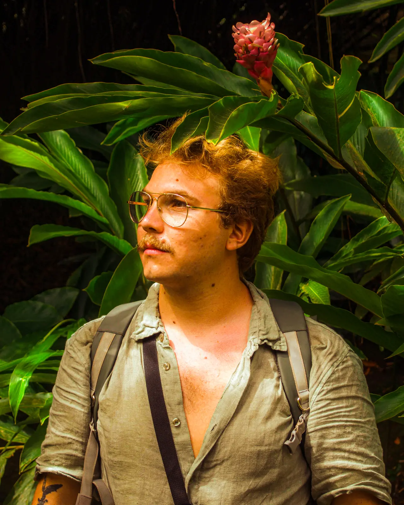

Pierre Bouchet
PhD Student · CRBE, Toulouse
I study biodiversity in a changing world. Working at a global scale with a trait-based approach, I look at how human exploitation and other disturbances reshape diversity patterns, and what this means for the functional diversity of life.

I am a geographer by training, specialised in large-scale ecological analysis. I am interested in what pushes species toward extinction or, on the contrary, helps them become invasive. I use a trait-based approach to understand these patterns and place my research within a socio-ecological framework: I study the mechanisms behind extinction and invasion, their functional consequences, and the ways human societies shape biodiversity for cultural, social and economic purposes.
My PhD focuses on how human uses affect the functional diversity of vertebrates. I ask whether some combinations of traits are targeted more than others, and whether this could lead to a functional erosion of diversity. I work within a biogeographic framework to tease apart regional differences in these impacts. Finally, I study how non-native species affect the functional diversity of native faunas, and which human activities and traits help species become invasive.
Beyond fieldwork and data, I care deeply about an inclusive, collaborative and international way of doing science. When I am not in the field, teaching or coding in R, you will find me hiking and camping in the mountains with my dog.
See the research →